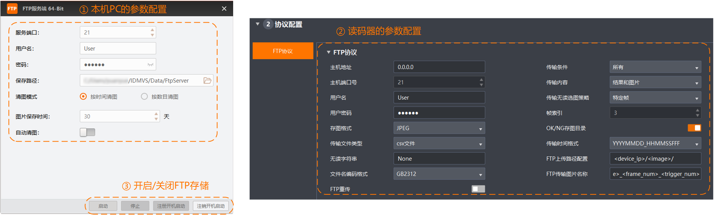

FTP存储
FTP存储功能将本机PC作为FTP的服务端，读码器作为FTP的客户端，通过FTP服务将读码器的图像或读码结果传输到本机PC上。通过菜单栏存图的FTP存储可设置本机PC作为FTP服务端的相关参数。
如需使用FTP存储功能存储读码器的图像或读码结果，需先完成本机PC和读码器的参数配置，再开启FTP服务。

本机PC的参数配置
本机PC的参数设置通过菜单栏存图的FTP存储完成。
- 服务端口
-
即FTP服务端的端口号。可自定义设置，未被其他主机端口占用即可。
说明端口请务必保证未被其他服务占用，当FTP建立失败时，可优先排查是否端口冲突，建议修改端口号再次尝试，例如修改为9000等。
- 用户名
-
即FTP服务端的用户名称。可自定义设置。
说明不支持中文字符。
- 密码
-
即FTP服务端的登录密码。可自定义设置。
说明不支持中文字符，且密码长度需控制在16个字符以内。
- 保存路径
-
单击右侧的可选择存储数据的路径。
说明请确保选择的路径，您具有操作权限且存储空间充足。
- 自动清图
-
打开此参数后，图像达到设置时间或数目时，IDMVS将根据清图模式参数的设置自动清除保存路径下的图像。否则，清图模式参数设置无效。
 可选择存储数据的路径。
可选择存储数据的路径。读码器的参数配置
用FTP服务存图时，完成本机PC的参数设置后，读码器作为FTP客户端，还需通过通讯配置启用FTP协议并完成相关参数设置。
此处仅介绍读码器如何使用该功能的部分较重要参数应如何填写。
- 主机地址
-
此时应填写本机PC的IP地址，快速获取本机PC的IP地址方法如下。
-
在IDMVS主界面右上角，单击切换设备。
-
在设备列表最下方处的本地网卡处查看本机PC的IP地址，在IP地址上可通过右键单击复制IP地址。
-
- 主机端口号
-
此时应填写FTP存储中服务端口的数值。
- 用户名
-
此时应填写FTP存储中用户名的内容。
- 用户密码
-
此时应填写FTP存储中密码的内容。
- 传输条件
-
可设置何时传输数据，可选所有、读取条码和没有读取条码。
- 传输内容
-
可设置传输数据中所包含的内容，可选仅包含结果、仅包含图片或结果和图片。
-
选择仅包含结果或结果和图片时，需通过传输文件类型设置输出的文件类型，可选csv文件、xls文件或txt文件3种。
-
选择仅包含图片或结果和图片时，需通过存图格式设置输出的图像格式，可选JPEG或BMP2种。
-
关于读码器的FTP协议如何使用以及参数如何设置，详情参见配置通讯协议章节的FTP协议。
开启FTP存储
完成本机PC和读码器的参数设置后，再通过菜单栏存图的FTP存储开启FTP服务，则读码器取流时的图像将根据设置的参数存储在本机PC上。
- 启动
-
单击启动即可直接启动FTP服务。
- 停止
-
单击停止即可直接停止FTP服务。
- 注册开机启动
-
单击注册开机启动后，本机PC开机时，FTP服务会自动启动。
- 注销开机启动
-
单击注销开机启动则关闭FTP服务开机自启动功能。
开启FTP服务后，不可退出FTP存储，应将FTP存储最小化，使其一直在后台运行。此时，即使关闭IDMVS，FTP存储也不会关闭。
若此时退出FTP存储，则FTP服务将会停止。
当开启FTP存储后，读码器运行过程中触发了传输条件，但指定文件夹内未生成对应内容，请检查电脑防火墙是否关闭，如果未关闭防火墙，请关闭防火墙；如果关闭防火墙后仍有问题，请联系本公司技术支持。